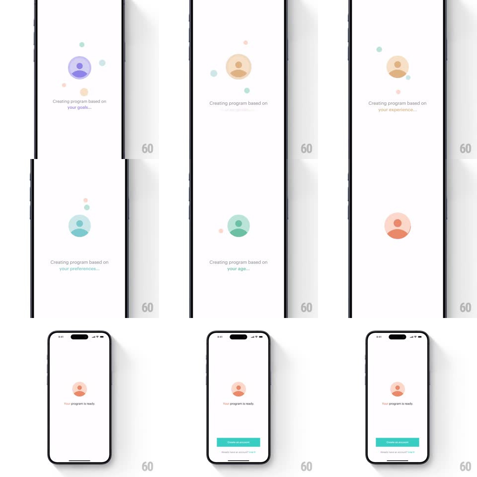

Media
Frame-by-frame

Rebuild this interaction 1:1: Balance's program-creation loader - a pastel person icon inside a soft circle cycles through color states (violet, teal, orange) as the copy rotates through "your goals...", "your preferences...", "your experience...", "your age...", then settles on "Your program is ready." with a Create an account button.

Rebuild this interaction 1:1: Balance's program-creation loader - a pastel person icon inside a soft circle cycles through color states (violet, teal, orange) as the copy rotates through "your goals...", "your preferences...", "your experience...", "your age...", then settles on "Your program is ready." with a Create an account button.
## Integration
Integration: stack-agnostic spec - springs given as stiffness/damping, timed motions as duration + curve; map every value to your framework and animation library of choice.
## Scene
White screen: centered circular avatar mark (a simple person bust in a tinted circle) surrounded by a few tiny floating pastel dots; two-line gray caption below ("Creating program based on your goals..."); final state adds a teal "Create an account" button and a small "Already have an account? Log in" link at the bottom.
## Motion spec
Pattern: color-cycling loading states.
- Each state (~1.8s): the circle's tint and the person icon crossfade to the next pastel (500ms hue crossfade - violet -> teal -> peach -> orange), the tiny satellite dots drift and re-tint to match, and the caption's last line crossfades to the new phrase (300ms, slight 4px rise).
- The person mark breathes gently throughout (scale 1 <-> 1.03, 2.4s sine).
- Final state: the circle settles on a steady peach, a faint ring halo expands once around it (scale 1 -> 1.15, fading), the caption swaps to "Your program is ready.", and the teal button slides up (350ms, ease-out) with the login link fading in after.
## Calibration
- Four rotating states, always in the same order - it is theater, not real progress.
- Pastels only; the teal button is the sole saturated element.
## Reduced motion
States crossfade without dot drift; button appears immediately.
## Don't miss
- The satellite dots are different tiny shapes/sizes and orbit loosely - they make the mark feel celestial.
- The caption's first line ("Creating program based on") never re-renders - only the variable tail swaps.